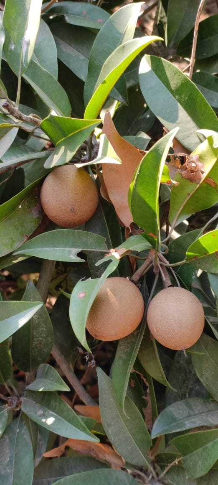

Our Produce

Grains & Pulses
Tur Dal, Channa, Wheat, Soyabean, Corn.

Farm Grains
Seasonally cultivated crops grown responsibly.

Fruits
Mangoes, Bore, Jackfruit, Tamarind.

Vegetables
Fresh farm vegetables grown with care.

Seasonal Produce
Clean, natural and responsibly grown food.